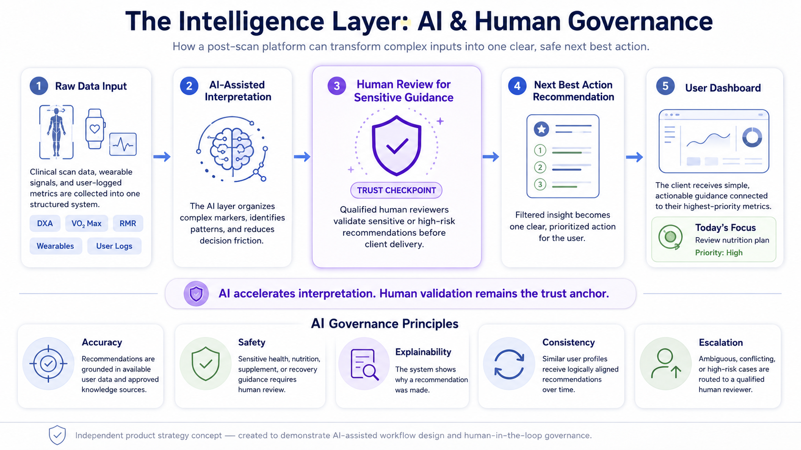
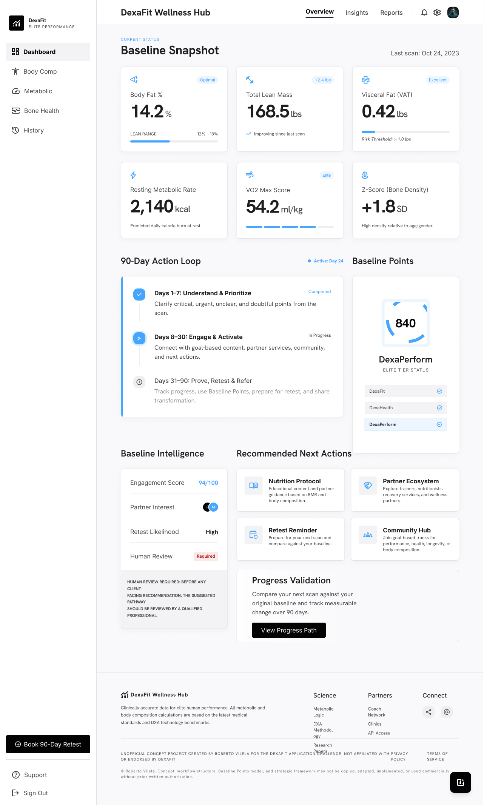
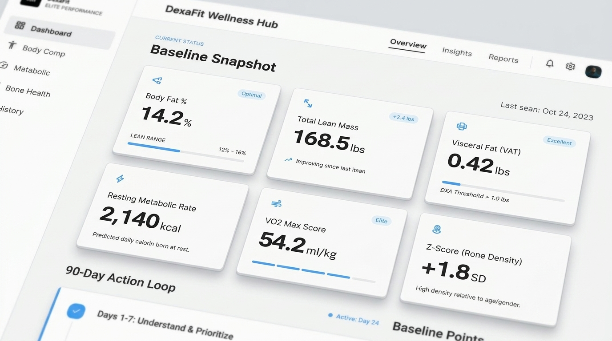
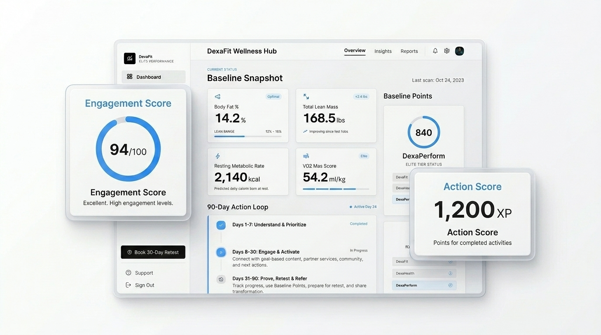
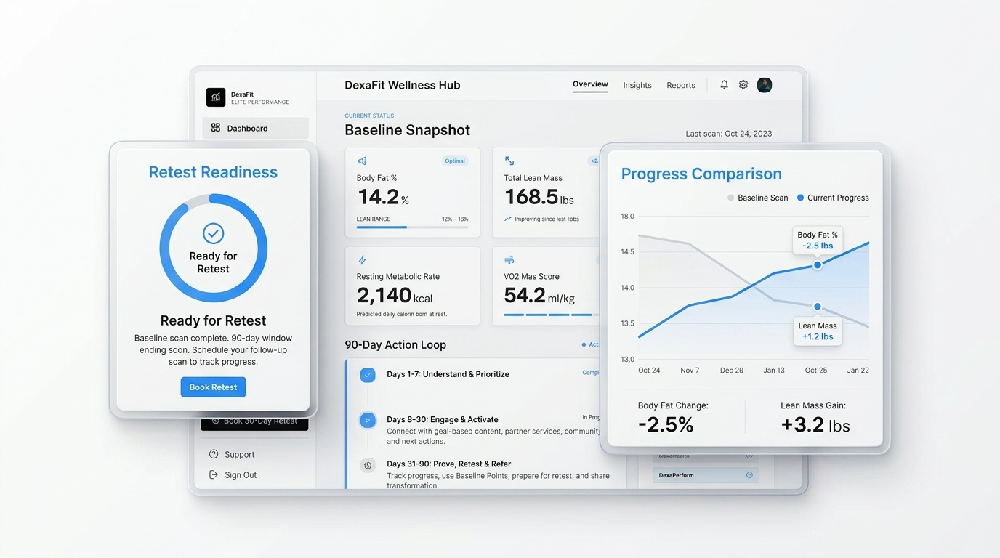

DexaFit Wellness Hub:
90-Day Action Loop
An AI-assisted product strategy concept designed to translate post-scan data into structured engagement, behavior change, and repeat scan retention.
bolt Case Snapshot
Problem
Post-scan motivation can fade when diagnostic data is not translated into clear next steps.
Solution
A digital Wellness Hub that connects scan results, education, AI-assisted guidance, human review, habit tracking, and retest preparation.
Business Value
Higher retention, increased repeat scan bookings, stronger product engagement, and clearer customer education.
My Contribution
I mapped the retention problem, designed the 90-day loop, structured the AI governance layer, and created the portfolio presentation.
Why the post-scan experience is the real retention opportunity
DexaFit’s diagnostic services create valuable physiological insight, but long-term value depends on what happens after the appointment. This section outlines the business context and the core retention problem the Wellness Hub is designed to address.
From Diagnostic Data to Customer Action
DexaFit delivers advanced body composition and metabolic testing, including DXA, VO₂ Max, and RMR. These services create high-value diagnostic insight, but the full business opportunity extends beyond the scan itself.
Clients are not only purchasing data. They are seeking clarity, accountability, and measurable proof of progress. A stronger post-scan experience can turn a one-time appointment into the beginning of an ongoing customer journey.
“The scan creates the insight. The system creates the behavior.”
The retention challenge is not the quality of the scan. The challenge begins after the appointment, when clients must interpret complex results and determine what to do next.
Without a structured post-scan system, motivation can fade, progress becomes harder to sustain, and the business risks losing repeat bookings, deeper engagement, and referral potential.
person User Problem
Clients receive valuable diagnostic data but may not know how to translate it into action.
storefront Business Problem
Without a structured follow-up system, DexaFit may lose retention momentum after the initial appointment.
account_tree Operational Problem
There is no guided post-scan framework connecting insight, action, progress, and retest readiness.
Strategic Hypothesis
If DexaFit can translate scan results into a guided 90-day action loop, the post-scan experience can become a retention engine rather than a one-time diagnostic moment.
The scan captures the baseline. The system turns that baseline into clarity, action, progress validation, and repeat engagement.
Target Audience Needs
Performance Athletes
Precise metrics, comparison over time, and performance guidance.
Emphasize measurable progress, output, recovery, and improvement.
Executive Wellness
Clear interpretation, low-friction action plans, and trusted recommendations.
Reduce complexity and surface simple, credible next steps.
Biohackers
Dashboards, trend tracking, integrations, and repeat testing.
Support experimentation, optimization, and measurable feedback loops.
My Contribution: From Strategy to Portfolio Artifact
Defined the 90-day retention concept and positioned the scan as the beginning of an ongoing customer journey.
Mapped the scan-to-retest journey and identified where engagement could drop after the appointment.
Designed the AI-assisted interpretation logic with human review checkpoints for sensitive guidance.
Structured the dashboard modules, user-facing flow, and next-best-action experience.
Curated, edited, refined, and approved the final case study, visuals, and presentation narrative.
Research & Discovery
The scan creates the insight.
The system creates the behavior.
Retention depends on the system that turns insight into action.
The 90-Day Action Loop
A structured follow-up framework designed to move clients from baseline clarity to measurable progress.
Understand
Turn scan results into clarity.
Interactive report
Metric explanation
Priority insights
Trust · Activation · Early engagement
Engage
Build consistency through guided action.
AI-assisted action plan
Habit tracking
Education prompts
Engagement · Product adoption · Behavior formation
Prove
Prepare for measurable comparison.
Retest reminders
Progress summary
Dashboard comparison
Repeat bookings · Retention · Referral momentum
A Guided Post-Scan Command Center
The proposed Wellness Hub turns diagnostic results into an ongoing digital product experience. Instead of leaving clients with a static report, the system provides baseline clarity, prioritized next actions, progress visibility, human-reviewed guidance, and retest readiness.
Baseline Snapshot
Converts scan data into clarity.
Clarity builds trustRecommended Actions
Converts insight into guided behavior.
Less friction = engagementAction Score
Tracks participation and completion.
Visible feedback reinforces behaviorRetest Readiness
Connects progress to the next scan.
Progress proof supports retention



AI + Human-in-the-Loop Governance
Governance is a core pillar of the Wellness Hub concept. Because the experience operates in a health-adjacent context, AI should assist interpretation and prioritization, while sensitive guidance remains subject to human review.
AI accelerates interpretation.
Human validation remains the trust anchor.
Raw Data Input
Scan data, wearable signals, and user inputs.
AI-Assisted Interpretation
Organizes patterns, priorities, and decision support.
Human Review Checkpoint
Validates sensitive or higher-risk guidance.
Next Best Action
Delivers one clear, prioritized recommendation.
User Dashboard
Surfaces guidance in a simple product experience.
Accuracy
Guidance is grounded in scan data and approved knowledge sources.
Safety
Sensitive recommendations require human review.
Explainability
The system shows why an action was recommended.
Consistency
Similar user profiles receive logically aligned recommendations.
Translating Product Experience into Business Value
How the Wellness Hub supports retention, repeat scans, and long-term value.
Higher Client Retention
Clients stay engaged after the scan through clarity, action, and progress visibility.
Increased Repeat Scan Bookings
Retest readiness makes the next scan feel like a natural continuation, not a separate sales push.
Stronger LTV & Referrals
Ongoing engagement increases long-term customer value. Visible progress creates shareable, referral-ready outcomes.
Operational Consistency
Staff follows a structured follow-up framework instead of disconnected, ad-hoc manual communication.
Interested in how I turn strategy, AI, and workflow design into practical business systems?
Open to roles, projects, and conversations.
Execution Workflow and What This Demonstrates
This section proves the work was executed with a documented workflow, not just presented as an idea. It shows how the case study was researched, built, assembled, and reviewed.
Defined the strategic direction and the 90-day engagement concept.
NotebookLM organized company context, public information, and market references.
ChatGPT guided the discovery process across marketing, product strategy, UX, and planning.
Discovery became the retention bottleneck, 90-day loop, intelligence layer, dashboard concept, and business value model.
ChatGPT, Gemini, Google Stitch, Voice RMV, Gamma, and Google Vids supported writing, design, audio, presentation, and video production.
The video was uploaded to YouTube and the final case study was assembled in Notion.
Roberto reviewed, edited, corrected, selected, and approved the final output manually.
This portfolio proves that I can use AI tools as part of a real execution pipeline. It demonstrates research discipline, product thinking, visual assembly, multimodal production, and human quality control.
Tool stack coverage
NotebookLM, ChatGPT, Gemini, Google Stitch, Voice RMV, Gamma, Google Vids, Notion, and YouTube.
Why it matters
It shows the work moved from strategy to execution and stayed structured, documented, and reviewable.
Limitations & Disclaimer
This project was created independently for portfolio and educational purposes. It does not represent an official DexaFit product, internal roadmap, clinical protocol, partnership, or business decision.
If Taken Forward
-
adjust
Validate with staffConfirm real post-scan pain points and operational gaps.
-
adjust
Build interactive prototypeTest dashboard comprehension and usability with real users.
-
adjust
Define success metricsMeasure retest conversion, repeat engagement, and referral lift.
-
adjust
Integrate CRMConnect retest readiness to real follow-up and conversion flows.